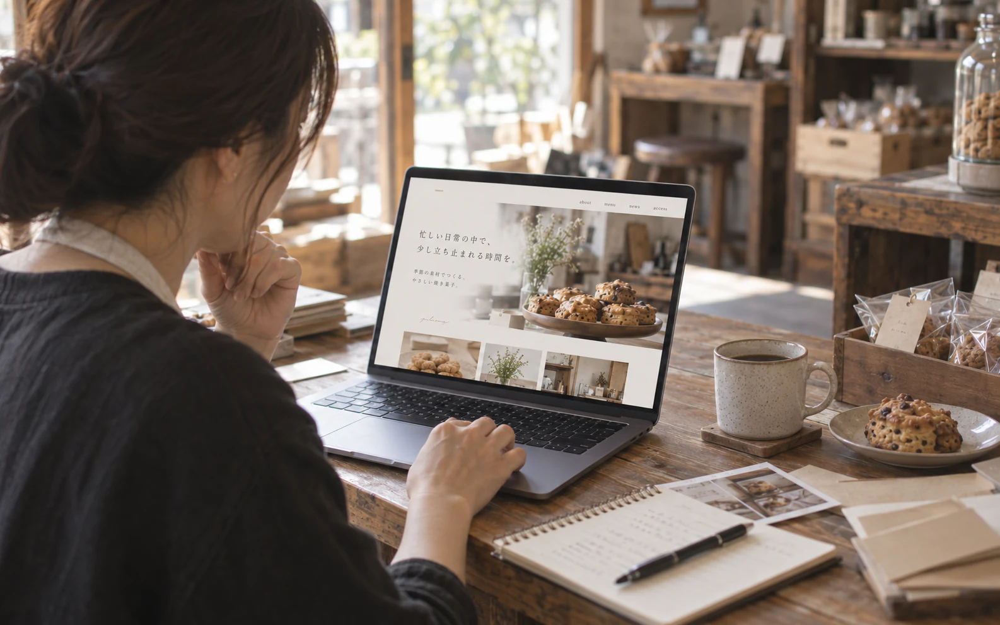
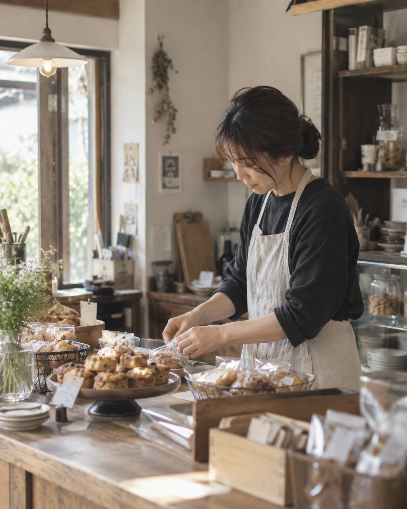
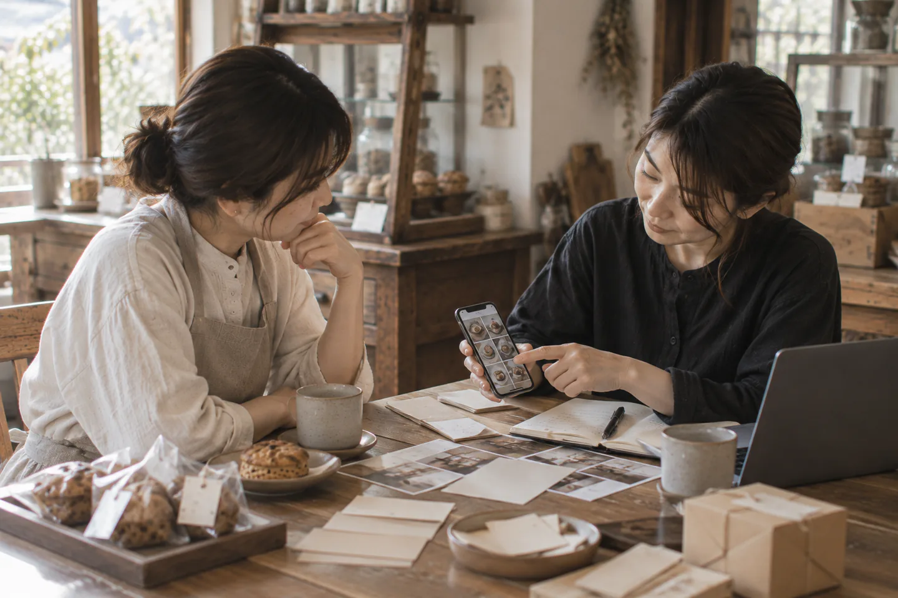
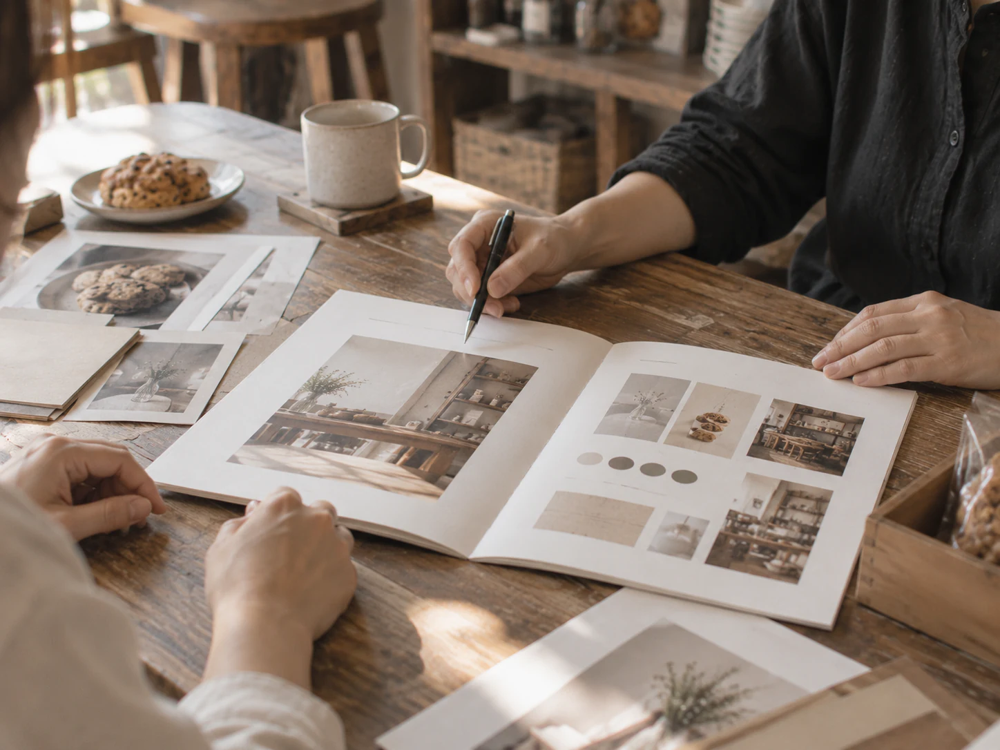
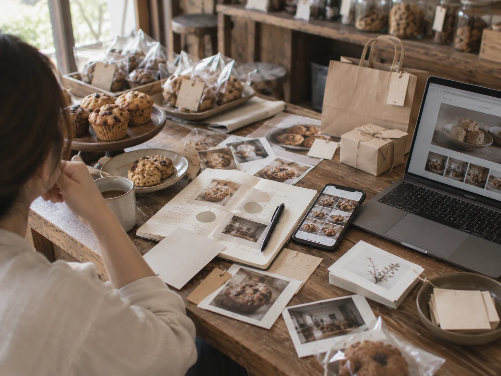
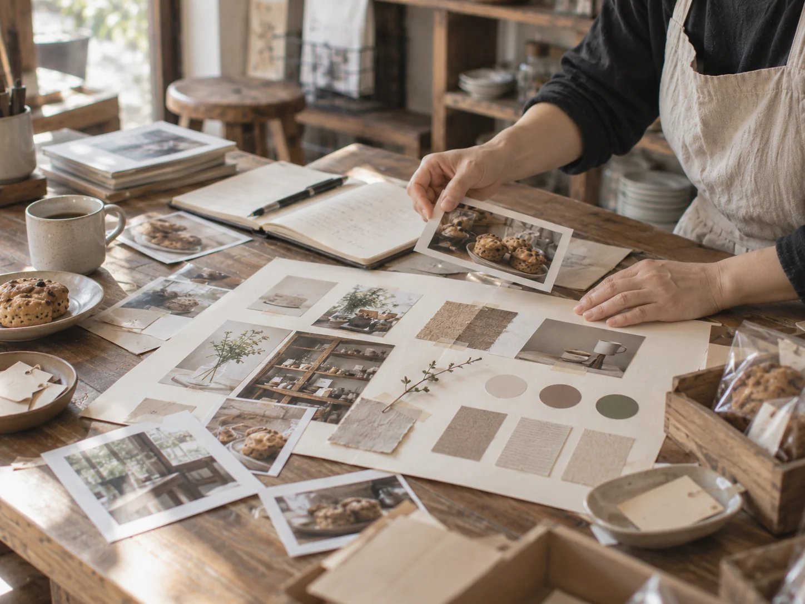
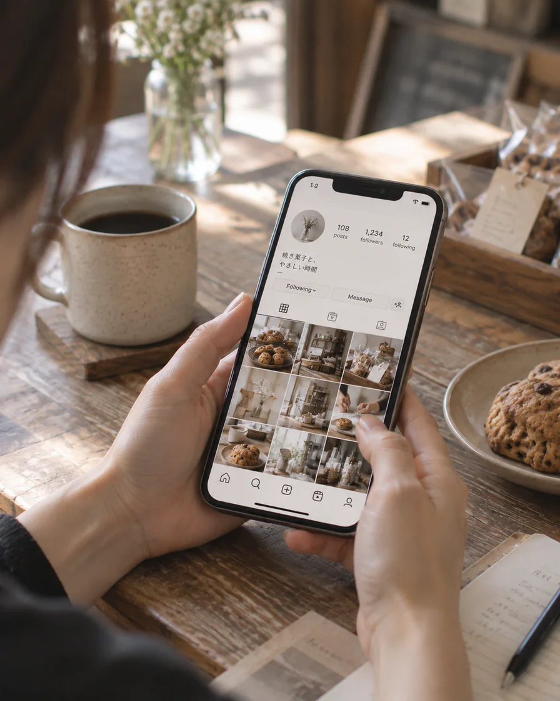
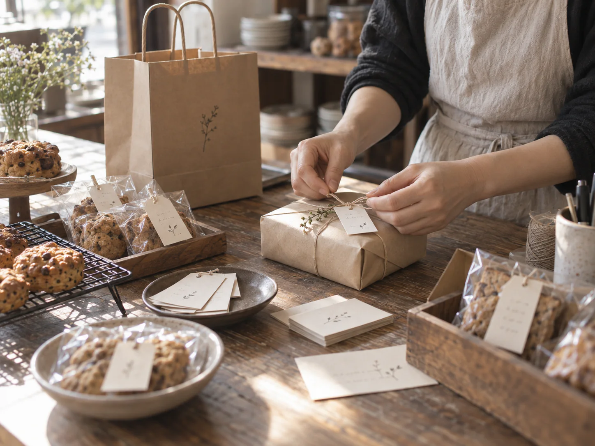

WEB
店の空気感まで伝わるWebへ。
静かな余白と自然な写真で、焼き菓子だけでなく、店で過ごす時間まで伝わる構成にしました。

BRAND PARTNER FOR SMALL SHOPS
店を始めた理由、
選んできたもの、
大切にしていること。
そこから、伝え方の軸を一緒に見つけます。

PROBLEM
必要なものをその都度つくってきたからこそ、
気づけば判断がばらばらになることがあります。
Instagramの写真選びに迷う
Webが今の店の雰囲気と合わない
制作物ごとに雰囲気が変わる
店の良さを言葉で説明できない
PROBLEM INSIGHT
店らしさを測る基準が、
まだ言葉になっていないだけかもしれません。
BRAND PHILOSOPHY
ブランドは、外から新しくつくるものではありません。
店を始めた理由や、日々重ねてきた小さな選択の中に、
その店らしさはすでに息づいています。
SERVICE
店の中にある「らしさ」を、対話から見つけ、
言葉とデザインの軸へ整え、必要な接点へつなげます。
Discover
店を始めた理由や、大切にしていること。商品、お客様、空間、これからについて対話しながら、すでに店の中にある「らしさ」を見つけます。
Define
見つけた内容を、コンセプトやメッセージ、言葉・写真・デザインの方向など、これからの判断に使える軸へ整理します。
Express

整理したブランドの軸を、WebやSNS、写真、ショップカード、パッケージなど、お客様と出会う接点へつなげます。
BEFORE / AFTER
整えるのは、すべてを同じ見た目にするためではありません。
店らしさを基準に、一つずつ選べるようにするためです。
BEFORE
Webも、SNSも、写真も、紙ものも。必要になるたび「これで合っているかな」と迷う。表現が悪いのではなく、判断の軸がまだ整理されていない状態です。
店の中にある「らしさ」を、判断の軸へ。
AFTER
「この写真は店らしい」「この言葉は合っている」と選べる。全部を同じ見た目にするのではなく、同じ店らしさから生まれている状態です。
伝える場所や方法が変わっても、立ち返れる基準がある。
それが、店らしい発信を続けるための土台になります。
DELIVERABLES
対話で見つけた内容は、これからの制作や発信に使える
「tane Brand Sheet」としてお渡しします。

制作のたびに迷ったとき、このBrand Sheetへ立ち返り、店らしい選択を重ねていけます。
CASE STUDY
開業3年目の小さな焼き菓子店を例に、
店の中にある魅力を見つけ、判断の軸へ整え、
お客様との接点へつなぐ過程をたどります。
Before
店にも商品にも魅力がある一方で、Web、SNS、写真、紙ものをその都度選んできたため、伝え方に共通する判断の軸がまだありませんでした。

Discovery
焼き菓子をつくる手、包み方、道具、商品の並べ方。店主の自然な所作を見つめ直すと、すでに大切にしてきたものが見えてきました。
Brand Axis
日常にあった魅力を、言葉、写真、色、空気感の方向へ整理し、これからの発信や制作に使える共通の判断基準をつくりました。

BRAND VALUE
忙しい日常の中で、少し立ち止まれる時間を届ける。
KEYWORDS
After
もともとの店の魅力を変えるのではなく、整理した軸をWeb、SNS、包装や紙ものへつなげました。
WEB
静かな余白と自然な写真で、焼き菓子だけでなく、店で過ごす時間まで伝わる構成にしました。

SOCIAL
商品、店内、手仕事の写真を同じ視点で選び、投稿が変わっても空気感が続く発信へ整えました。

PACKAGE / CARD
素材や色、言葉の基準を、紙袋、包装、ショップカード、タグなどの店舗接点にも展開しました。

見た目を一つにそろえたのではなく、
すべての接点を、同じ店らしさから選べるようになりました。
WHO IT’S FOR
すでにある店の魅力を大切にしながら、
これからの伝え方を整えたい小さなお店へ。
開業して数年が経ち、次の整え方を考えている
店に愛着があり、今ある良さを大切にしたい
商品だけでなく、店の世界観も大切にしている
WebやSNSの見せ方に迷っている
全部を作り直すのではなく、今あるものを活かしたい
オーナー自身も、考えるプロセスに参加したい
まだ答えが決まっていなくても大丈夫です。
対話を重ねながら、その店に合う形を一緒に探します。
PROCESS
一方的につくるのではなく、店主と一緒に見つけ、
整え、日々の判断に使えるところまで伴走します。
01Talk
30分のオンライン相談で、今感じていることや、これから考えたいことを伺います。
02Discover
ヒアリングと現状整理を通して、日々の選択にある魅力や大切にしていることを見つけます。
03Define
見つけた店らしさを判断できる言葉へ整理し、tane Brand Sheetにまとめます。
04Express
整えた軸をもとに、必要な接点へ一貫した伝え方を展開します。
05Grow
納品後もオーナー自身が判断して使い続けられるよう、内容の説明とフォローを行います。
進め方や期間は、お店の状況と依頼範囲を確認してからご案内します。
PLAN
店らしさの土台を整えるプランと、
Webで伝わる形までつなげるプランがあります。
どちらのプランも、今あるものをすべて作り直すことを前提にしていません。お店の状況と、これから必要な範囲を一緒に確認します。
お店のことを話してみるABOUT
小さな店舗のWeb制作をする中で、
Webだけを整えても、ブランドの判断軸がなければ、
また次の制作物で迷ってしまうと感じました。
Brand Designer / Web Designer
つくるものを先に決めるのではなく、店を始めた理由や、日々大切にしていることを聞くところから始めます。
店主の中にある感覚を置き去りにせず、これからも自分たちで選び、育てていける形へ一緒に整えます。
FAQ
はじめてのブランド相談で生まれやすい疑問を、
事前にまとめました。
はい。店を始めた理由や、大切にしていることを聞きながら、一緒に整理するところから始めます。完成した答えを用意していただく必要はありません。
はい。すべてを作り直すことが目的ではありません。今あるロゴや制作物も確認し、店の良さを活かせる方法を一緒に考えます。
BRAND + WEBプランで対応します。ブランドの判断軸を整理したうえで、情報設計、デザイン、HTML / CSS / Vanilla JavaScriptによる実装、公開支援まで行います。
はい。最初の30分相談をはじめ、ヒアリングや打ち合わせはオンラインで対応します。
BRAND FOUNDATIONは約4週間、BRAND + WEBは約8〜10週間が目安です。進め方は、お店の状況と依頼範囲を確認してご案内します。
カフェ、焼き菓子店、ベーカリー、花屋、雑貨店、セレクトショップなど、商品だけでなく空間や世界観も価値になる小規模なお店を想定しています。
ここにないことも、最初の相談で気軽にお聞かせください。
30 MINUTES / ONLINE
こちらはポートフォリオ用のデモフォームです。入力内容が外部へ送信されることはありません。